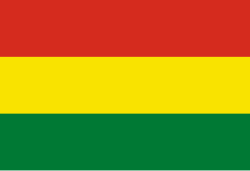

¿De qué se trató el Mundial de 1994?
La Copa Mundial de la FIFA 1994 fue la decimoquinta edición del torneo y se disputó en los Estados Unidos entre el 17 de junio y el 17 de julio de 1994. Representó la histórica llegada de la máxima cita futbolística al gigante norteamericano, un territorio donde el "soccer" era un deporte minoritario. El evento estuvo impregnado de una atmósfera de súper producción hollywoodense, gigantismo comercial y un éxito de taquilla absoluto que batió todos los récords de asistencia en la historia de la competición.
El campeonato estuvo marcado por hitos institucionales de gran relevancia histórica. Se continuó utilizando el trofeo oficial estrenado en 1974: la Copa Mundial de la FIFA, diseñada por Silvio Gazzaniga. A nivel deportivo, el certamen rompió con el juego defensivo de la edición anterior implementando cambios reglamentarios revolucionarios: se prohibió que los arqueros tomaran el balón con las manos tras un pase intencional con el pie de un compañero y se otorgaron, por primera vez en un mundial, 3 puntos por victoria en la fase de grupos para premiar la vocación ofensiva. En el plano organizativo, se mantuvo el formato de 24 selecciones participantes, pero fue la última edición con este cupo antes de la expansión comercial posterior.
Estados Unidos organizó un certamen que transformó por completo el marketing deportivo global, valiéndose de estadios colosales diseñados para el fútbol americano y adaptados tecnológicamente para el balompié. En el plano futbolístico, la selección de Brasil, comandada de forma brillante por la dupla ofensiva de Romário y Bebeto, demostró un fútbol equilibrado, vistoso y con una gran disciplina táctica. En la gran final, disputada bajo el sofocante sol del majestuoso Estadio Rose Bowl de Pasadena ante más de 94.000 espectadores, Brasil derrotó a Italia en una dramática definición por penaltis —la primera en la historia de las finales mundiales— tras empatar 0-0 en el tiempo regular.
Informacion que tenes que saber
Info general
- Pais Anfitrion: Estados Unidos
- Fecha de Inicio:
17 de Junio de 1994
(17/06/1994) - Fecha de Finalizacion:
17 de Julio de 1994
(17/07/1994) - Duracion: 31 dias
- Organizador: FIFA
- Edicion: XV
Estadisticas
- Partidos jugados: 52
- Goles anotados: 141
- Promedio de gol: 2,71 por partido
- Máximos goleadores:
Hristo Stoichkov y Oleg Salenko
(6 goles cada uno) - Final:
Brasil 0 - 0 Italia
(3-2 en tanda de penaltis)
info de la Ciudad
- Ciudades Sede: 9
- Selecciones Participantes: 24
- Estadios Utilizados: 9
- Estadio Principal:
Rose Bowl (Pasadena/Los Ángeles) - Asistencia total:
3.587.538 espectadores
(Récord histórico absoluto)
Podio
| Posicion | Seleccion | Bandera |
|---|---|---|
| 1º Puesto | Brasil |  |
| 2º Puesto | Italia |  |
| 3º Puesto | Suecia |  |
| 4º Puesto | Bulgaria |  |
(Nota: El tercer puesto se definió en un partido entre Suecia y Bulgaria. Suecia venció 4-0 al combinado búlgaro en el Estadio Rose Bowl de Pasadena).
Historia completa de la Copa Mundial de la FIFA 1994
La FIFA otorgó la sede a los Estados Unidos en 1988, superando a las candidaturas de Marruecos y Brasil, bajo la estricta promesa de impulsar la creación de una liga profesional de fútbol en el país norteamericano (lo que daría origen a la MLS). A pesar de los temores iniciales sobre la falta de pasión local, el público estadounidense respondió llenando de forma masiva los estadios, registrando asistencias medias superiores a las 68.000 personas por encuentro, una marca que sigue vigente como récord absoluto de la FIFA.
La fase de clasificación repartió 24 boletos, dejando fuera de forma dramática a gigantes europeos como Inglaterra, Francia (eliminada en el último segundo por Bulgaria) y Dinamarca. En contrapartida, el torneo presenció los debuts absolutos de Grecia, Nigeria, Arabia Saudita y de la Rusia post-soviética. Alemania compitió por primera vez desde 1938 como una nación completamente unificada tras la caída del Muro de Berlín.
Desarrollo del torneo
El mundial comenzó el 17 de junio de 1994. En la fase de grupos, el planeta asistió al dramático derrumbe de Diego Armando Maradona: tras marcar un golazo ante Grecia en el debut y brillar contra Nigeria, el astro argentino dio positivo por efedrina en un control antidopaje, siendo suspendido y dejando la célebre frase "me cortaron las piernas". Otra enorme tragedia golpeó al torneo extrafutbolísticamente cuando el defensor colombiano Andrés Escobar fue asesinado en su país pocos días después de marcar un autogol que significó la eliminación de su selección. En el plano puramente deportivo, el delantero ruso Oleg Salenko hizo historia al marcar 5 goles en un solo partido ante Camerún (6-1), encuentro donde el camerunés Roger Milla, a sus 42 años, anotó el gol de consolación, convirtiéndose en el jugador más longevo en marcar en un mundial.
La gran final
A partir de los octavos de final, emergió el talento descomunal del italiano Roberto Baggio, quien salvó in extremis a una Italia gris anotando goles decisivos ante Nigeria, España y Bulgaria para llevar a la Azzurra a la final. Simultáneamente, la Bulgaria de Hristo Stoichkov se transformó en la gran cenicienta al eliminar en cuartos de final a la campeona vigente, Alemania, con un inolvidable 2-1 en Nueva York.
La gran final tuvo lugar el 17 de julio en el Rose Bowl de Pasadena bajo un calor sofocante de más de 36°C. Brasil dominó las acciones con el lirismo de Romário y la solidez de Dunga, pero se topó con el férreo muro defensivo de la Italia de Franco Baresi. Tras 120 minutos de intensa batalla táctica, el 0-0 obligó a definir el título en la tanda de penaltis. La tensión alcanzó niveles insostenibles: tras los fallos de los italianos Baresi y Massaro, llegó el turno del máximo héroe de Italia, Roberto Baggio; el "Divino Codino" remató con potencia, pero el balón voló por encima del travesaño, dejando una de las imágenes más dramáticas y tristes del fútbol moderno. Brasil se coronaba tetracampeón del mundo en suelo americano.
Brasil consiguió así su cuarto campeonato mundial, consagrándose en solitario como la selección más ganadora del planeta en ese momento.
⚽ Pelota Oficial del Mundial 1994

ADIDAS QUESTRA
El Questra fue el balón oficial de la Copa Mundial de la FIFA Estados Unidos 1994, fabricado por la firma alemana Adidas. Su nombre y estética derivaban de la "búsqueda de las estrellas" (quest of the stars), homenajeando el 25° aniversario de la misión Apolo 11.
Información General
Nombre: Adidas Questra
Fabricante: Adidas (Alemania)
Material: Cinco materiales distintos, incluyendo capa externa de espuma de polietileno blanca
Diseño: Representaciones del espacio y constelaciones cósmicas dentro de las tríadas
Torneo: Copa Mundial FIFA Estados Unidos 1994
Características
- Fabricado con cinco materiales diferentes para optimizar su rendimiento.
- La capa externa de espuma de polietileno blanca le otorgaba una altísima capacidad de recuperación energética.
- Hacía al balón increíblemente suave al tacto, mucho más rápido en el aire y sumamente difícil de predecir para los porteros.
- Su diseño rindió homenaje al 25° aniversario de la misión Apolo 11 con motivos espaciales.
- Representó un salto tecnológico significativo respecto al Etrusco Único de 1990.
Dato curioso
El Questra fue el primer balón mundialista cuyo diseño temático no guardaba relación directa con el país anfitrión, sino con un hito histórico de la humanidad: el alunizaje del Apolo 11. Su velocidad superior en el aire sorprendió a los porteros de todo el mundo.
Selecciones Participantes
Europa
 Alemania
Alemania  Bélgica Bulgaria
Bélgica Bulgaria  España
España  Grecia
Grecia  Irlanda Italia
Irlanda Italia  Países Bajos
Países Bajos  Noruega
Noruega  Rusia
Rusia  Rumania Suecia
Rumania Suecia  Suiza
Suiza Ausentes notables


Sudamérica
 Argentina Brasil (Vigente campeón)
Argentina Brasil (Vigente campeón)  Colombia
Colombia 
BoliviaNorteamérica, Centroamérica y Caribe
 Estados Unidos (Anfitrión)
Estados Unidos (Anfitrión)  México
México Asia
 Arabia Saudita
Arabia Saudita  Corea del Sur
Corea del Sur África
 Camerún
Camerún  Nigeria
Nigeria  Marruecos
Marruecos
Sedes |
||||
|---|---|---|---|---|
|
El Mundial de 1994 se disputó en nueve ciudades sede y nueve estadios, la mayoría de ellos colosales recintos diseñados originalmente para el fútbol americano y adaptados tecnológicamente para el balompié. El Rose Bowl de Pasadena, en Los Ángeles, fue la sede principal del torneo, albergando la gran final entre Brasil e Italia. Nueva York, Chicago, San Francisco, Dallas, Orlando, Boston, Detroit y Washington completaron el mapa de ciudades anfitrionas. En total se jugaron 52 partidos repartidos entre los nueve estadios, con una asistencia total récord de 3.587.538 espectadores a lo largo de todo el campeonato, con promedios de más de 68.000 personas por partido. |
||||
| Nombre del Estadio | Ciudad | Capacidad aprox. | Partidos Jugados | |
Rose Bowl |
Pasadena (Los Ángeles) | 94.100 | 8 | |
Stanford Stadium |
Stanford (San Francisco) | 84.100 | 6 | |
Giants Stadium |
East Rutherford (Nueva York) | 78.400 | 7 | |
Pontiac Silverdome |
Pontiac (Detroit) | 77.500 | 4 (Primer estadio completamente techado en la historia de los mundiales) | |
Cotton Bowl |
Dallas | 64.000 | 6 | |
Citrus Bowl |
Orlando | 65.300 | 5 | |
Soldier Field |
Chicago | 63.100 | 5 | |
Foxboro Stadium |
Foxborough (Boston) | 61.400 | 6 | |
Robert F. Kennedy Memorial Stadium |
Washington D.C. | 53.100 | 5 | |
Arbitros de la Copa Mundial de la FIFA 1994 por pais
| Arbitros | Pais |
|---|---|
| Sándor Puhl (Árbitro de la final) | |
| Arturo Brizio Carter | |
| Francisco Lamolina | |
| Ernesto Filippi |  |
| Mario Sánchez Yantén |  |
| José Torres Cadena | |
| Joël Quiniou | |
| Pierluigi Pairetto | |
| Hellmut Krug | |
| Philip Don | |
| Mario van der Ende | |
| Bo Karlsson | |
| Ali Bennaceur |  |
| Ali Bujsaim |  |
| Jamal Al-Sharif |  |
| Vincent Mauro | |
| Rodrigo Badilla |  |
Resumen del torneo — Copa Mundial de la FIFA 1994
Primera Fase de Grupos
Grupo A
- Rumania
- Suiza
- Estados Unidos
- Colombia
Rumania dominó el grupo y Colombia, una de las favoritas, fue eliminada en fase de grupos tras el trágico autogol de Andrés Escobar ante Estados Unidos.
Grupo B
- Brasil
- Suecia
- Rusia
- Camerún
Rusia
1:6
Camerún
Oleg Salenko marcó 5 goles en este partido, récord histórico en mundiales. Roger Milla, con 42 años, anotó el gol del honor camerunés.
Grupo C
- Alemania
- España
- Corea del Sur
- Bolivia
Alemania, la campeona vigente, clasificó primera del grupo con comodidad junto a España. Bolivia debutó en un Mundial tras 44 años de ausencia.
Grupo D
- Nigeria
- Argentina
- Bulgaria
- Grecia
Maradona brilló ante Grecia y Nigeria pero fue expulsado del torneo por dopaje. Nigeria se consagró primera del grupo en su debut mundialista.
Grupo E
- Italia
- México
- Irlanda
- Noruega
Italia sufrió una derrota ante Irlanda pero clasificó como segunda del grupo. Noruega sorprendió venciendo a México pero quedó eliminada.
Grupo F
- Países Bajos
- Arabia Saudita
- Bélgica
- Marruecos
Arabia Saudita sorprendió al mundo avanzando a octavos de final en su debut mundialista. Marruecos quedó eliminado sin sumar puntos.
Fase de Eliminación Directa
Octavos de Final
- Alemania 3 - 2 Bélgica
- España 3 - 0 Suiza
- Arabia Saudita 1 - 3 Suecia
- Rumania 3 - 2 Argentina
- Países Bajos 2 - 0 Irlanda
- Brasil 1 - 0 Estados Unidos
- Nigeria 1 - 2 Italia (pról.)
- México 1 - 1 Bulgaria (Bulgaria 3-1 pen.)
Nigeria
1:2
Italia
Roberto Baggio salvó a Italia en el minuto 88 empatando 1-1 y luego marcó el gol de la victoria en la prórroga, iniciando su gesta personal en el torneo.
Cuartos de Final
- Italia 2 - 1 España
- Países Bajos 2 - 0 Brasil... No. Brasil 3 - 2 Países Bajos
- Brasil 3 - 2 Países Bajos
- Bulgaria 2 - 1 Alemania
- Suecia 2 - 2 Rumania (Suecia 5-4 pen.)
Bulgaria protagonizó la mayor sorpresa del torneo al eliminar a la campeona vigente Alemania con un memorable 2-1 en el Giants Stadium de Nueva York, con Stoichkov como figura.
Semifinales
Semifinal 1
Brasil
1:0
Suecia
Brasil se clasificó para la final gracias a un gol de Romário. Suecia mostró solidez defensiva pero no pudo detener la magia del delantero brasileño.
Semifinal 2
Bulgaria
1:2
Italia
Roberto Baggio volvió a ser el héroe de Italia con un doblete que sentenció a Bulgaria. Stoichkov anotó el gol del honor búlgaro, despidiéndose de un torneo histórico para su selección.
Partido por el Tercer Puesto
Suecia y Bulgaria disputaron el partido por el tercer y cuarto puesto, tras ser eliminadas en sus respectivas semifinales.
Suecia
4-0
Bulgaria
Gran Final
Finalistas
Brasil Grupo B Italia Grupo EFinal
Brasil 3 (pen.) Italia 2 (pen.)(0-0 tras 90 minutos y prórroga. Primera final de mundiales definida por penaltis. Fallo decisivo de Roberto Baggio; fallos previos de Baresi y Massaro para Italia)
Máximos goleadores — Copa Mundial de la FIFA 1994
| Jugador | Goles | Pais |
|---|---|---|
| Hristo Stoichkov | 6 | |
| Oleg Salenko | 6 | |
| Romário | 5 | |
| Roberto Baggio | 5 | |
| Jürgen Klinsmann | 5 | |
| Kennet Andersson | 5 | |
Equipo estelar — Copa Mundial de la FIFA 1994
Elegido por el Grupo de Estudios Técnicos de la FIFA por primera vez en la historia de los mundiales, el equipo ideal reflejó el predominio de Brasil, campeón del mundo, y el gran nivel individual mostrado por jugadores de Italia, Rumania, Suecia y Bulgaria.
| Jugador | Posición | Pais |
|---|---|---|
| Michel Preud'homme | Portero | |
| Jorginho | Defensa | |
| Márcio Santos | Defensa | |
| Paolo Maldini | Defensa | |
| Miodrag Belodedici | Defensa | |
| Dunga | Mediocampista | |
| Tomas Brolin | Mediocampista | |
| Gheorghe Hagi | Mediocampista | |
| Roberto Baggio | Mediocampista | |
| Romário | Delantero | |
| Hristo Stoichkov | Delantero | |
Premios Oficiales — Copa Mundial de la FIFA 1994
| Premio | Jugador | Pais |
|---|---|---|
| 🥇 Mejor Jugador (Balón de Oro) | Romário | |
| ⚽ Bota de Oro (compartida) | Hristo Stoichkov | |
| ⚽ Bota de Oro (compartida) | Oleg Salenko | |
| 🧤 Mejor Portero (Premio Lev Yashin - 1ª edición) | Michel Preud'homme | |
| 👶 Mejor Jugador Joven | Marc Overmars | |
| 🤝 Premio Fair Play | Selección de Brasil | |
Controversias de la Copa Mundial de la FIFA 1994
Esta edición estuvo rodeada de polémicas reglamentarias, eventos trágicos e incidentes de dopaje de impacto global.
-
El caso Maradona: dopaje y fin de una era
La controversia más grande de la historia de los mundiales modernos ocurrió tras el partido Argentina contra Nigeria en Boston. La enfermera Sue Carpenter entró al terreno de juego para llevar de la mano a Diego Armando Maradona al control antidopaje de rutina. Días después se anunció que la muestra del astro argentino contenía cinco sustancias prohibidas derivadas de la efedrina. Maradona fue expulsado de manera fulminante del torneo por la FIFA, quebrando por completo las aspiraciones de la selección argentina y marcando el fin de la carrera mundialista del "10".
-
El codazo de Tassotti a Luis Enrique
En los cuartos de final se vivió una de las agresiones físicas más flagrantes de la competición durante el áspero choque entre España e Italia en Boston. En los minutos finales, dentro del área italiana, el defensor de la Azzurra Mauro Tassotti le propinó un brutal codazo en el rostro al mediocampista español Luis Enrique, rompiéndole la nariz en directo ante las cámaras de televisión. Insólitamente, el árbitro húngaro Sándor Puhl no sancionó el penalti ni amonestó al agresor. Posteriormente, la FIFA actuó de oficio utilizando las repeticiones televisivas y suspendió a Tassotti con 8 partidos de sanción, poniendo fin a su carrera internacional.
-
El asesinato de Andrés Escobar
La tragedia más oscura y dolorosa de la historia mundialista ocurrió fuera del campo. El defensor colombiano Andrés Escobar fue asesinado a tiros en Medellín el 2 de julio de 1994, apenas unos días después de que su selección regresara al país tras la eliminación en fase de grupos. El crimen estuvo vinculado al autogol que Escobar marcó ante Estados Unidos, que contribuyó a la eliminación colombiana, en un contexto de violencia narco y apuestas ilegales que marcó trágicamente al deporte.
-
El calor extremo y los horarios televisivos
Las condiciones climatológicas extremas volvieron a generar un enorme malestar ético. La televisión comercial europea impuso que los partidos clave se jugaran a las doce del mediodía o las dos de la tarde en ciudades de climas desérticos como Dallas, Orlando o Los Ángeles. Los futbolistas llegaron a competir bajo temperaturas en el terreno de juego que alcanzaban los 42°C, forzando por primera vez a la FIFA a permitir pausas extraoficiales de hidratación rápida para evitar desmayos o golpes de calor de gravedad.
Identidad del Torneo: Diseño, Marketing, Medios y Legado
Mascota Oficial: "Striker"
Diseñado por los renombrados estudios de animación de Warner Bros., Estados Unidos presentó a un simpático perro común y corriente vestido con los colores de la bandera estadounidense (camiseta blanca con vivos rojos y pantalones azules), con la palabra "USA 94" en su pecho.
Su elección rompió con la abstracción modernista del "Ciao" de 1990 para volver a un personaje tierno y familiar de enorme éxito transgeneracional. Striker se convirtió en una gigantesca maquinaria de merchandising a través de juguetes, dibujos animados y videojuegos oficiales, logrando su cometido de acercar el fútbol a la infancia norteamericana.
Canción Oficial: "Gloryland"
Interpretada por el artista de soul Daryl Hall junto al coro góspel Sounds of Blackness. La pieza fusionaba el pop-rock americano tradicional con poderosos arreglos de coros espirituales, capturando el sonido identitario de las iglesias y la herencia musical de los Estados Unidos.
Logotipo Oficial
El emblema oficial apostó por el patriotismo y las líneas enérgicas del diseño corporativo de los 90. Presentaba un balón de fútbol clásico ascendiendo en diagonal, dejando una estela de barras rojas y blancas verticales que emulaban la bandera de los Estados Unidos, todo enmarcado sobre un fondo azul brillante con la inscripción "WorldCupUSA94".
La Revolución de la Inauguración
La ceremonia de apertura celebrada el 17 de junio de 1994 en el Soldier Field de Chicago redefinió para siempre cómo se conciben los megaeventos deportivos globales. Inspirada directamente en el espectáculo de medio tiempo del Super Bowl de la NFL, la FIFA rompió con las tradicionales marchas gimnásticas e inauguró una puesta en escena repleta de celebridades mundiales, música pop y un despliegue de color de nivel hollywoodense.
Conducida por la famosa presentadora Oprah Winfrey y con la actuación estelar de la cantante Diana Ross, el momento cumbre del show se convirtió en una de las imágenes más memorables e hilarantes de la televisión mundial: Ross debía correr hacia la portería y meter un gol de penalti simulado como parte de una coreografía donde el arco se partiría en dos de manera teatral; sin embargo, Ross falló el disparo desviándolo de forma grotesca por el poste izquierdo. A pesar del error, los efectos especiales se activaron y la portería se rompió de todos modos, sellando un hito televisivo que personificó el choque cultural entre el espectáculo estadounidense y el fútbol tradicional.
Televisión y Avances en la Cobertura
Fue el primer mundial producido visualmente con gráficos digitales estandarizados de alta definición contemporánea, incorporando permanentemente el tiempo de juego y el marcador en una de las esquinas superiores de la pantalla (el clásico "score bug"). La simbiosis entre el deporte europeo y el marketing americano transformó la Copa del Mundo en un festival de consumo masivo: los estadios se llenaron de pantallas gigantes de alta fidelidad, se introdujo el sonido estereofónico envolvente en las canchas y se implementaron de forma definitiva los nombres de los futbolistas impresos en la espalda de las camisetas, junto a dorsales fijos para todo el certamen, agigantando el negocio de la venta de uniformes a nivel global.
El Legado del Torneo
El certamen dejó un legado transformador: convirtió al fútbol en el espectáculo deportivo más comercializado del mundo, inspiró la creación de la MLS (Major League Soccer), batió todos los récords de asistencia de la historia mundialista y democratizó el "score bug" televisivo que hoy es universal. Los cambios reglamentarios introducidos —los 3 puntos por victoria y la prohibición del pase al portero con el pie— fueron consecuencia directa de Italia 1990 y se consolidaron definitivamente en esta edición, transformando el fútbol moderno para siempre.
Tabla de Rendimiento y Posiciones Finales
| Posicion | Seleccion | Pts | PJ | PG | PE | PP | GF | GC | Dif | Rendimiento |
|---|---|---|---|---|---|---|---|---|---|---|
| 1 | Brasil |
17 | 7 | 5 | 2 | 0 | 11 | 3 | 8 | 81,0% |
| 2 | Italia |
14 | 7 | 4 | 2 | 1 | 8 | 5 | 3 | 66,7% |
| 3 | Suecia |
12 | 7 | 3 | 3 | 1 | 15 | 8 | 7 | 57,1% |
| 4 | Bulgaria |
10 | 7 | 3 | 1 | 3 | 10 | 11 | -1 | 47,6% |
| 5 | Alemania |
10 | 5 | 3 | 1 | 1 | 9 | 7 | 2 | 66,7% |
| 6 | Rumania |
10 | 5 | 3 | 1 | 1 | 10 | 9 | 1 | 66,7% |
| 7 | Países Bajos |
9 | 5 | 3 | 0 | 2 | 8 | 6 | 2 | 60,0% |
| 8 | España |
8 | 5 | 2 | 2 | 1 | 10 | 6 | 4 | 53,3% |
| 9 | Nigeria |
6 | 4 | 2 | 0 | 2 | 7 | 4 | 3 | 50,0% |
| 10 | Argentina |
6 | 4 | 2 | 0 | 2 | 8 | 6 | 2 | 50,0% |
| 11 | Bélgica |
6 | 4 | 2 | 0 | 2 | 4 | 4 | 0 | 50,0% |
| 12 | Arabia Saudita |
6 | 4 | 2 | 0 | 2 | 5 | 6 | -1 | 50,0% |
| 13 | México |
5 | 4 | 1 | 2 | 1 | 4 | 4 | 0 | 41,7% |
| 14 | Estados Unidos |
4 | 4 | 1 | 1 | 2 | 3 | 4 | -1 | 33,3% |
| 15 | Suiza |
4 | 4 | 1 | 1 | 2 | 5 | 7 | -2 | 33,3% |
| 16 | Irlanda |
4 | 4 | 1 | 1 | 2 | 2 | 4 | -2 | 33,3% |
| 17 | Noruega |
4 | 3 | 1 | 1 | 1 | 1 | 1 | 0 | 44,4% |
| 18 | Rusia |
3 | 3 | 1 | 0 | 2 | 7 | 6 | 1 | 33,3% |
| 19 | Colombia |
3 | 3 | 1 | 0 | 2 | 4 | 5 | -1 | 33,3% |
| 20 | Corea del Sur |
2 | 3 | 0 | 2 | 1 | 4 | 5 | -1 | 22,2% |
| 21 | Bolivia | 1 | 3 | 0 | 1 | 2 | 1 | 4 | -3 | 11,1% |
| 22 | Camerún |
1 | 3 | 0 | 1 | 2 | 3 | 11 | -8 | 11,1% |
| 23 | Marruecos |
0 | 3 | 0 | 0 | 3 | 2 | 5 | -3 | 0% |
| 24 | Grecia |
0 | 3 | 0 | 0 | 3 | 0 | 10 | -10 | 0% |
- PTS: PUNTOS
- PJ: PARTIDOS JUGADOS
- PG: PARTIDOS GANADOS
- PE: PARTIDOS EMPATADOS
- PP: PARTIDOS PERDIDOS
- GF: GOLES A FAVOR
- GC: GOLES EN CONTRA
- DIF: DIFERENCIA DE GOL
- RENDIMIENTO: BASADA EN LA EFECTIVIDAD DE PARTIDOS (PG, PE, PP)